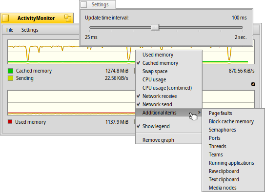

日本語
日本語 Français
Français Deutsch
Deutsch Italiano
Italiano Русский
Русский Español
Español Svenska
Svenska Українська
Українська 中文 ［中文］
中文 ［中文］ Português
Português English
English ActivityMonitor
ActivityMonitor
| Deskbarメニュー: | ||
| 場所: | /boot/system/apps/ActivityMonitor | |
| 設定ファイル: | ~/config/settings/ActivityMonitor settings |
ActivityMonitor を起動して関心のある各種項目を有効にすることにより、システムリソースを追跡することができます。
ウィンドウ内で右クリックすることにより、次のすべてのリソースを表示するウィンドウを表示させたり、表示させないようにできます:
Used/Cached Memory, Swap Space, CPU Usage, Network Receive/Send, Page faults, Semaphores, Ports, Threads, Teams, Running Applications, Raw/Text Clipboard Size, Media Nodes
グラフの下に表示されているのは凡例です（コンテキストメニューから非表示にすることができます）。Icon-O-Matic といったスポイトツールから色をドラッグ・アンド・ドロップすることにより、グラフやその背景の色をかえることができます。
表示領域がグラフで混雑してきた場合、メニューを使って新しい表示領域を追加することができます。
メニューから、画面の更新間隔を設定するパネルを開くことができます。
各表示領域は独自のReplicantハンドルを保持しているので、例えばデスクトップ上で、好きなように配置することができます。